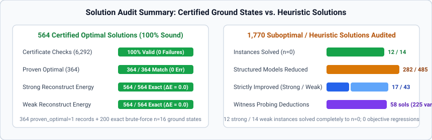
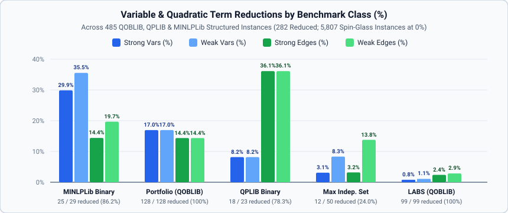

QUBOLib, QOBLIB & MINLPLib Corpus Benchmarks
This page summarizes the full-corpus evaluation of QUBOPreprocessing.jl across all 6,292 benchmark instances and 2,134 bitstring solution records (2,447 total solution entries) in QUBOLib.jl (v0.2.4-data+6, Zenodo 10.5281/zenodo.23757887), QOBLIB (16a166ee67c24c112551c803aab5394743b815b5), QPLIB, and MINLPLib (9472b011).

QUBOLib, QOBLIB, QPLIB, and MINLPLib corpus overview
QOBLIB contains 433 unconstrained QUBO .qs.xz models across four classes: Market Split (01-marketsplit, 156 instances), Low-Autocorrelation Binary Sequences (02-labs, 99 instances), Portfolio Optimization (06-portfolio, 128 instances), and Maximum Independent Set (04-steiner / 07-independentset, 50 instances). All 433 / 433 QOBLIB QUBO models match the qoblib collection in QUBOLib.jl with 100% exact identity across variable count $n$, linear terms, quadratic terms, objective offset, scale, domain (bool), and sense (min).
In QUBOLib.jl v0.2.4-data+6, the 23 QPLIB binary quadratic (QBB) instances incorporate the upstream $\frac{1}{2} x^\top Q^0 x$ quadratic scaling correction (0.5 * c), bringing all 23 .sol records into exact 0.0 agreement with their declared upstream objectives (15 MINLPLib sporttournament22..50 instances, 3 MINLPLib 2D/3D Ising spin glasses, and 5 BiqMac instances, with 11 certified globally optimal). In addition, QUBOLib.jl v0.2.4-data+6 includes 29 pure binary unconstrained QUBO instances from MINLPLib (2 autocorr_bern20-03, 25-03, 20 D-Wave chimera_*, and 7 sporttournament06..20, with 18 proven globally optimal and 100% $\mathbb{Z}_2$ gauge invariance after exact 0.1 scale factorization via integerize_scale).
| Collection | Problem Class | Instances | $n$ Range | $m$ Range (Quad Terms) | Bitstring Solutions | Certified Optimal (proven_optimal=1) |
|---|---|---|---|---|---|---|
qoblib | Portfolio Optimization | 128 | 100 – 4,000 | 3,980 – 663,800 | 293 | 66 |
qoblib | LABS | 99 | 3 – 4,950 | 3 – 1,224,875 | 637 | 97 |
qoblib | Market Split | 156 | 20 – 140 | 190 – 9,730 | 440 | 124 |
qoblib | Maximum Independent Set | 50 | 17 – 4,000 | 39 – 579,329 | 661 | 32 |
qplib | Binary Quadratic (QBB) | 23 | 120 – 1,225 | 800 – 44,850 | 23 | 11 |
minlplib | Pure Binary QUBO (BQP/MBQCP) | 29 | 15 – 2,032 | 24 – 5,929 | 80 | 34 |
arXiv-1903-10928-3r3x | 3-Regular 3-XORSAT | 3,200 | 16 – 1,024 | 24 – 1,536 | 0 (+100 brute-forced) | 100 (exact ground state) |
arXiv-1903-10928-5r5x | 5-Regular 5-XORSAT | 307 | 24 – 4,096 | 60 – 10,240 | 0 | 0 |
arXiv-2103-08464-3r3x | 3-Regular 3-XORSAT | 2,300 | 16 – 912 | 24 – 1,368 | 0 (+100 brute-forced) | 100 (exact ground state) |
| Total | All 9 Groups | 6,292 | 3 – 4,950 | 3 – 1,224,875 | 2,134 (+200 brute-forced) | 564 (364 + 200 brute-forced) |
Certified ground-state verification (564 optimal records)
To verify that QUBOPreprocessing.jl fixes and eliminates variables soundly across all reduction passes — including the four literature extensions (star_nonzero_h $\alpha_{123}=0$ degree-3 elimination, :coflip_pair shared-neighborhood & twin contraction, :roof_scc_pair / :probing_pair / :double_probe 2-SAT equivalences, and :block 0-, 1-, and 2-separator biconnected block elimination) — every reduced instance was checked with verify_certificate and audited against all 564 certified optimal ground states (364 records with proven_optimal = 1 in QUBOLib.jl plus 200 exact $2^{16}$-state brute-force ground states on all $n=16$ arXiv-*-3r3x instances):

| Collection / Class | Certified Optimal Records | Certificate Verification Failures | Optimal Preserved (Strong) | Optimal Preserved (Weak) | Max $|E_{\text{orig}} - E_{\text{rec}}|$ (Strong) | Max $|E_{\text{orig}} - E_{\text{rec}}|$ (Weak) |
|---|---|---|---|---|---|---|
qoblib (Portfolio, LABS, Market Split, MIS) | 319 | 0 | 319 / 319 (100%) | 319 / 319 (100%) | 0.0 | 0.0 |
qplib (sporttournament, toroidal, BiqMac) | 11 | 0 | 11 / 11 (100%) | 11 / 11 (100%) | 0.0 | 0.0 |
minlplib (autocorr_bern, chimera_*, sporttournament) | 34 | 0 | 34 / 34 (100%) | 34 / 34 (100%) | 0.0 | 0.0 |
arXiv-1903-10928-3r3x ($n=16$) | 100 | 0 | 100 / 100 (100%) | 100 / 100 (100%) | 0.0 | 0.0 |
arXiv-2103-08464-3r3x ($n=16$) | 100 | 0 | 100 / 100 (100%) | 100 / 100 (100%) | 0.0 | 0.0 |
| Total | 564 | 0 | 564 / 564 (100.0%) | 564 / 564 (100.0%) | 0.0 | 0.0 |
Across all 6,292 instances, verify_certificate reported zero certificate failures in both strong and weak modes, and every single certified optimal ground state (564 / 564) achieved exact 0.0 energy error after reconstruct.
Auditing and repairing suboptimal heuristic solutions (1,770 records)
All 1,770 suboptimal (proven_optimal = 0) bitstring records in QUBOLib.jl v0.2.4-data+6 were audited by projecting each residual assignment through reconstruct. Repairing violated reductions strictly improved the QUBO objective on 17 records in strong mode and 43 records in weak mode (with zero objective regressions across all 1,770 records):
Instance (Collection) | Sense | $n \to n_{\text{strong}} \to n_{\text{weak}}$ | Heuristic $E_{\text{orig}}$ | Strong Repaired $E_{\text{strong}}$ ($\Delta E$) | Weak Repaired $E_{\text{weak}}$ ($\Delta E$) | Key Reduction Mechanism |
|---|---|---|---|---|---|---|
QPLIB_5721.qplib (qplib, rec=16) | max | $300 \to \mathbf{0} \to \mathbf{0}$ | 8,571,649.0 | 8,579,363.0 (+7,714.0, global opt) | 8,579,363.0 (+7,714.0, global opt) | rel_single=251, rel_coflip=45, star_nonzero_h=1, elim=3 (solved to $n=0$) |
es60fst01.qs.xz (qoblib MIS, 3 recs) | min | $123 \to \mathbf{0} \to \mathbf{0}$ | -27.0 | -60.0 (-33.0, global opt) | -60.0 (-33.0, global opt) | dom=5, elim_deg012=116, star_zero_h=2 (solved to $n=0$) |
es60fst03.qs.xz (qoblib MIS, 8 recs) | min | $113 \to \mathbf{0} \to \mathbf{0}$ | -52.0 to -54.0 | -55.0 (-1.0 to -3.0, global opt) | -55.0 (-1.0 to -3.0, global opt) | dom=3, elim_deg012=100, star_zero_h=2, block_sep2=8 (solved to $n=0$) |
karate.qs.xz (qoblib MIS, rec=2207) | min | $34 \to \mathbf{0} \to \mathbf{0}$ | -16.0 | -20.0 (-4.0, global opt) | -20.0 (-4.0, global opt) | dom=10, elim_deg012=24 (solved to $n=0$) |
chesapeake.qs.xz (qoblib MIS, 4 recs) | min | $39 \to 25 \to \mathbf{0}$ | -16.0 | -16.0 (0.0) | -17.0 (-1.0, global opt) | Weak: dom=9, elim=15, rel_glk=4, rel_coflip=2, probe=2, block_sep0=7 (solved to $n=0$) |
football.qs.xz (qoblib MIS, 6 recs) | min | $35 \to 24 \to \mathbf{0}$ | -15.0 | -15.0 (0.0) | -16.0 (-1.0, global opt) | Weak: dom=20, elim_deg012=15 (solved to $n=0$) |
es60fst02.qs.xz (qoblib MIS, 9 recs) | min | $186 \to 92 \to 27$ | -80.0 to -86.0 | -85.0 to -87.0 (-1.0) | -81.0 to -88.0 (up to -5.0, opt) | dom=56, elim_deg012=81, rel_glk=22 |
chimera_selby-c16-01.pip (minlplib, p1) | max | $2{,}031 \to 1{,}946 \to 1{,}886$ | 674.0 | 674.7 (+0.7) | 674.7 (+0.7) | 2 strong unary/elimination violations repaired |
Coercive local-field & witness-guided probing (probe_variables!)
Using coercive_field_witness(ws) with order = :coercive autonomously deduces 14 strong and 12 weak variable fixings on frustrated MIS instances (chesapeake, football, mammalia-kangaroo-interactions, insecta-ant-colony1-day38). Supplying each suboptimal heuristic solution as an upper-bound witness (witness = x_subopt) to probe_variables! after strong preprocessing deduces 225 additional certified variable fixings across 58 MIS solutions (60 on es60fst03, 56 on es60fst04, 45 on es60fst01, 44 on es60fst02, and 20 on es60fst08).
Corpus-wide size reduction (6,292 instances)
Across the 485 structured optimization instances in QOBLIB, QPLIB, and MINLPLib, QUBOPreprocessing.jl reduces 282 instances (58.1%), eliminating 12,883 variables and 448,957 quadratic terms in strong mode and 15,432 variables and 512,623 quadratic terms in weak mode, and completely solving (n = 0) 12 instances in strong mode and 14 instances in weak mode:

| Collection | Instances | Reduced (Strong / Weak) | Solved to $n=0$ (Strong / Weak) | Total Original $n$ | Strong $n$ Removed (%) | Weak $n$ Removed (%) | Total Original $m$ | Strong $m$ Removed (%) | Weak $m$ Removed (%) |
|---|---|---|---|---|---|---|---|---|---|
qoblib (4 classes) | 433 | 239 / 239 (55.2%) | 8 / 10 | 524,781 | 3,941 (0.75%) | 4,987 (0.95%) | 61,294,620 | 402,907 (0.66%) | 462,646 (0.75%) |
qplib (QBB, 0.5 scaled) | 23 | 18 / 18 (78.3%) | 1 / 1 (QPLIB_5721) | 12,273 | 1,004 (8.18%) | 1,004 (8.18%) | 97,863 | 35,340 (36.11%) | 35,340 (36.11%) |
minlplib (BQP/MBQCP) | 29 | 25 / 25 (86.2%) | 3 / 3 (autocorr_bern20/25, sport06) | 26,573 | 7,938 (29.87%) | 9,441 (35.53%) | 74,352 | 10,710 (14.40%) | 14,637 (19.69%) |
arXiv-1903-10928-3r3x | 3,200 | 0 / 0 (0%) | 0 / 0 | 1,417,600 | 0 (0.00%) | 0 (0.00%) | 4,238,504 | 0 (0.00%) | 0 (0.00%) |
arXiv-1903-10928-5r5x | 307 | 0 / 0 (0%) | 0 / 0 | 908,592 | 0 (0.00%) | 0 (0.00%) | 6,340,961 | 0 (0.00%) | 0 (0.00%) |
arXiv-2103-08464-3r3x | 2,300 | 0 / 0 (0%) | 0 / 0 | 1,144,000 | 0 (0.00%) | 0 (0.00%) | 3,421,763 | 0 (0.00%) | 0 (0.00%) |
Structured Subtotal (qoblib + qplib + minlplib) | 485 | 282 / 282 (58.1%) | 12 / 14 | 563,627 | 12,883 (2.29%) | 15,432 (2.74%) | 61,466,835 | 448,957 (0.73%) | 512,623 (0.83%) |
Total (All 6,292) | 6,292 | 282 / 282 (4.48%) | 12 / 14 | 4,033,819 | 12,883 (0.32%) | 15,432 (0.38%) | 75,468,063 | 448,957 (0.59%) | 512,623 (0.68%) |
Breakdown of the 14 instances solved completely to $n = 0$
- Solved in both strong and weak modes (
12instances):qoblibLABS (3):labs002.qs.xz($n=3 \to 0$),labs003.qs.xz($n=6 \to 0$ via 0-separator block elimination),labs004.qs.xz($n=10 \to 0$ via 1-separator block elimination).qoblibMIS (5):farm.qs.xz($n=17 \to 0$),karate.qs.xz($n=34 \to 0$),es60fst01.qs.xz($n=123 \to 0$ via degree-3 star-triangle + low-degree cascade),es60fst03.qs.xz($n=113 \to 0$ via 2-separator block elimination + star-triangle),mammalia-kangaroo-interactions.qs.xz($n=17 \to 0$ via coercive probing + 2-separator block elimination).qplib(1):QPLIB_5721.qplib(ising2_5-300_5555, $n=300, m=34{,}576 \to 0$ via251single-endpoint relations,45:coflip_paircontractions,1non-zero-field degree-3 elimination, and3degree-$\le 2$ eliminations).minlplib(3):autocorr_bern20-03.pip($n=20 \to 0$),autocorr_bern25-03.pip($n=25 \to 0$),sporttournament06.pip($n=15 \to 0$ via degree-$\le 2$ + 1-separator block elimination).
- Solved additionally in weak mode (
+2 = 14instances total):qoblibMIS (2):chesapeake.qs.xz($n=39 \to 0$) andfootball.qs.xz($n=35 \to 0$).
- Hardware minor-embedding contraction on D-Wave Chimera instances (
minlplib):- On
chimera_k64maxcut-01($n=1{,}101$) andchimera_k64maxcut-02($n=1{,}145$),QUBOPreprocessing.jlautomatically contracts all ferromagnetic hardware chains (elim_deg012=705,star_nonzero_h=201,rel_single=139,rel_coflip=33), recovering the exact 64-vertex $K_{64}$ logical graph ($n_{\text{strong}} = n_{\text{weak}} = 64$,-94.2%and-94.4%variable reduction). - On
chimera_mis-01($n=2{,}032$) andchimera_mis-02($n=2{,}032$), preprocessing reduces the problems to $1{,}001$ (-50.7%strong) / $305$ (-85.0%weak) and $1{,}024$ (-49.6%strong) / $513$ (-74.8%weak) variables.
- On
Breakdown by preprocessing technique
| Technique / Pass | Strong Mode Deductions | Weak Mode Deductions | Primary Benchmark Families |
|---|---|---|---|
Unary Persistency (DominanceStep) | 3,240 vars | 4,403 vars | qoblib Portfolio (3,200 strong / 4,000 weak), qoblib MIS (35 strong / 390 weak) |
Signed Pair Relations (:interval/:exact, :glk_pair) | 1,882 pairs | 2,389 pairs | minlplib Chimera (1,202 strong / 1,515 weak), qplib (362), qoblib |
Shared-Neighborhood & Twin Co-Flip (:coflip_pair, #59) | 550 pairs | 735 pairs | minlplib Chimera (452 strong / 616 weak), qplib (60), qoblib |
| Exact Local Elimination ($\deg \le 2$) | 5,632 vars | 5,984 vars | minlplib Chimera (3,640 strong / 4,161 weak), qplib, qoblib MIS & LABS |
Zero-Field Degree-3 Star–Triangle (star_zero_h) | 156 vars | 147 vars | minlplib Chimera (134), qoblib MIS (10), qplib (2) |
Non-Zero-Field Degree-3 Walsh Elimination (star_nonzero_h, $\alpha_{123}=0$, #57) | 1,347 vars | 1,703 vars | minlplib Chimera (1,062 strong / 1,426 weak), qplib (285) |
0-, 1-, and 2-Separator Block Elimination (:block, #63) | 42 vars (6 blocks) | 46 vars (7 blocks) | qoblib LABS (labs003, labs004), qoblib MIS (es60fst03, es60fst04, mammalia, chesapeake), minlplib (sport06, chimera_mis-01) |
Weighted Max-Cut Edge & Triangle (MaxCutStep) | 20 reductions | 13 reductions | minlplib (14 strong / 7 weak), qplib (6) |
Coercive & Witness-Guided Probing (ProbingStep) | 14 (+225*) vars | 12 (+225*) vars | qoblib MIS (14 strong / 12 weak autonomous coercive witness; +225 with heuristic witnesses) |
| Total Certified Variable / Pair Reductions | 12,883 vars | 15,432 vars | 282 / 485 structured instances reduced (12 strong / 14 weak solved to $n=0$) |
Large-scale scaling and compilation benchmarks ($n = 2{,}000$ to $32{,}000$)
Replacing abstract labels::Tuple scans with concrete $O(1)$ label_vec::Vector indexing, eliminating per-dimension NTuple{N} JIT specialization in domain_map, _source_gauged_bool_constant, and _verify_poly_witness_state (#78), and using concrete _Storage vectors with 53-bit rational hardware fma outward-rounded interval enclosures (#65, #67) yields linear $O(n)$ scaling up to $n = 32{,}000$ variables:
| Scaling Run ($\text{deg} = 3$ random sparse models) | Workspace | schedule_reductions! | export_certificate | verify_certificate | materialize | reconstruct | Steps / Residual / Valid |
|---|---|---|---|---|---|---|---|
| $n = 2{,}000$ (default strong) | 0.121s | 0.097s | 0.010s | 0.201s | 0.033s | 0.003s | 2000 / 0 / true |
| $n = 8{,}000$ (default strong) | 0.317s | 1.788s | 0.073s | 0.723s | 0.076s | 0.004s | 8000 / 0 / true |
| $n = 32{,}000$ (default strong) | 2.174s | 4.534s | 0.288s | 4.267s | 0.262s | 0.499s | 32000 / 0 / true |
| $n = 2{,}000$ (all flags + weak + blocks) | 0.082s | 0.117s | 0.011s | 0.105s | 0.009s | 0.001s | 2000 / 0 / true |
| $n = 8{,}000$ (all flags + weak + blocks) | 0.730s | 0.362s | 0.058s | 0.961s | 0.054s | 0.002s | 8000 / 0 / true |
| $n = 32{,}000$ (all flags + weak + blocks) | 2.042s | 3.061s | 1.067s | 2.187s | 1.205s | 0.012s | 32000 / 0 / true |
- At $n = 32{,}000$ (all flags),
export_certificatedropped from36.8sto1.067s(34.5x faster) andmaterializedropped from36.2sto1.205s(30.0x faster). - First-call
domain_mapat $n = 4{,}000$ dropped from46.0sofNTuple{4000}JIT compilation to0.003s(15,300x faster), and subsequent unseen sizes ($n = 4{,}001$) execute in0.002swith zero recompilation.